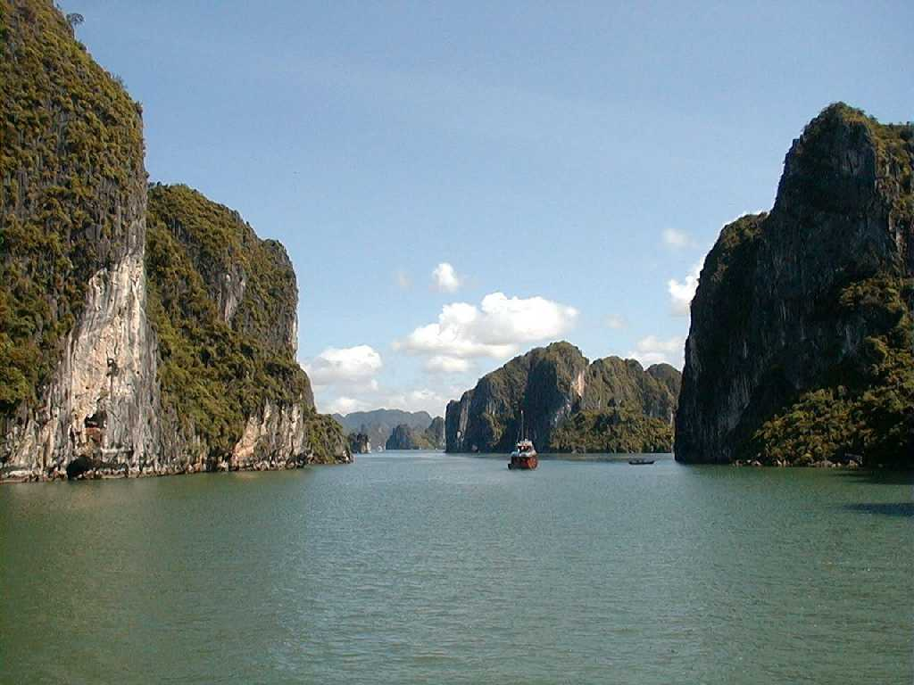
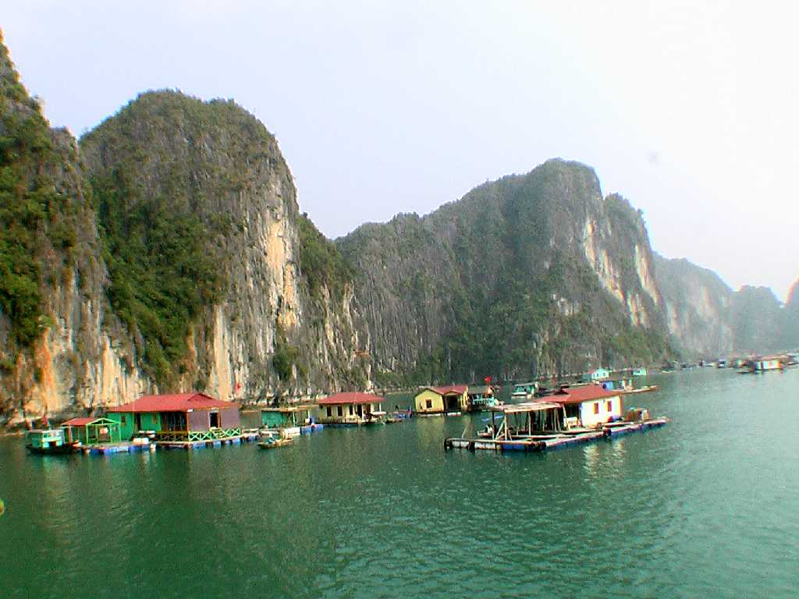
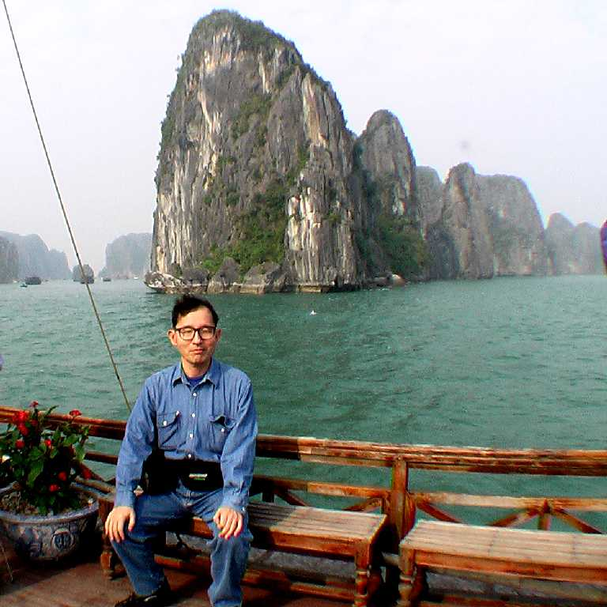
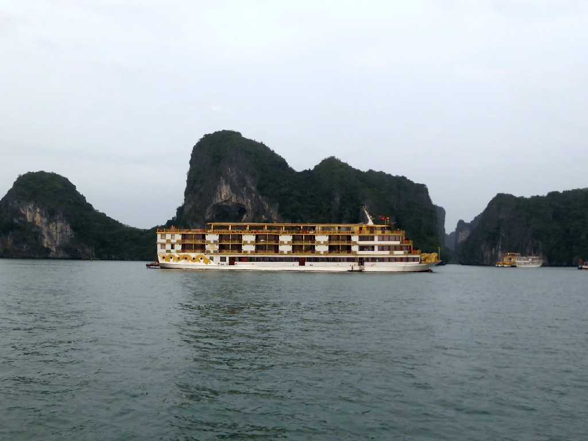
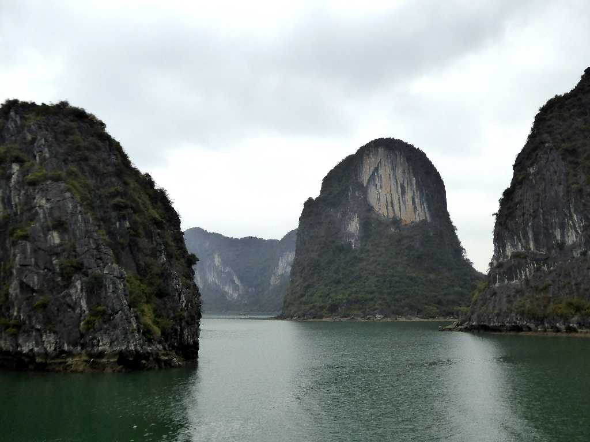
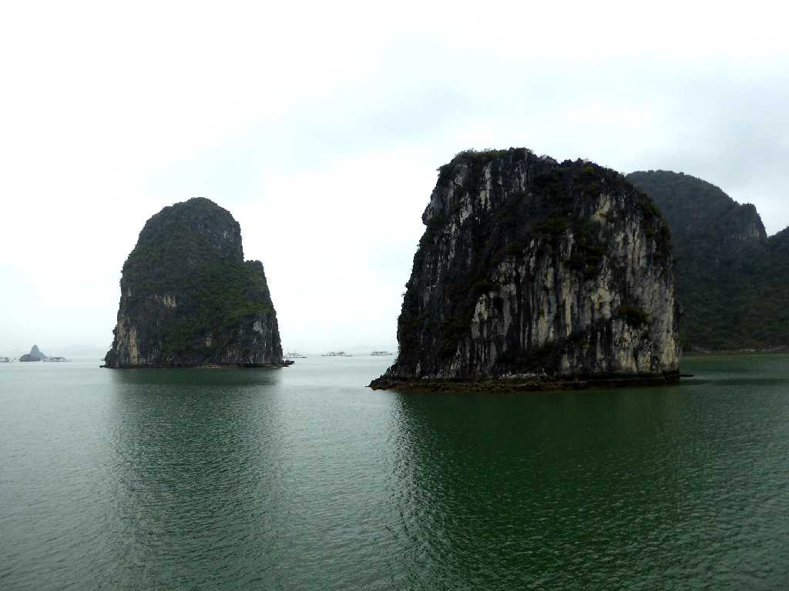
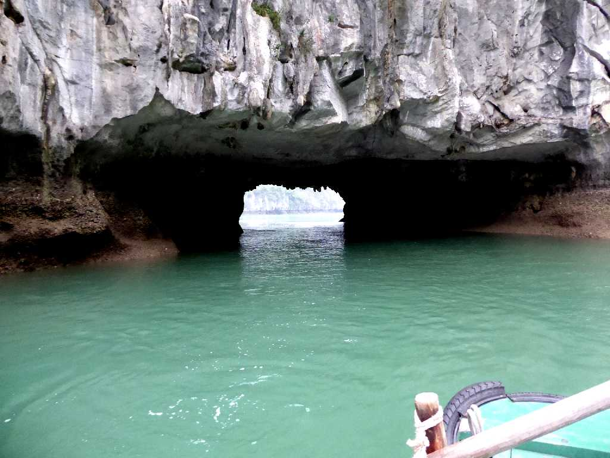
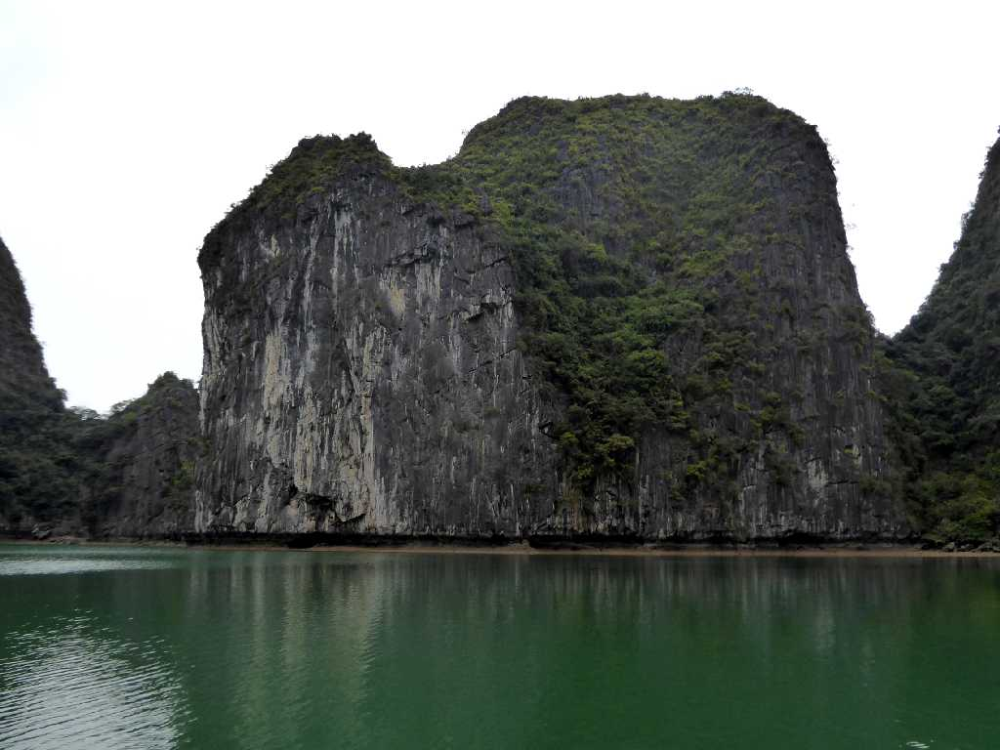
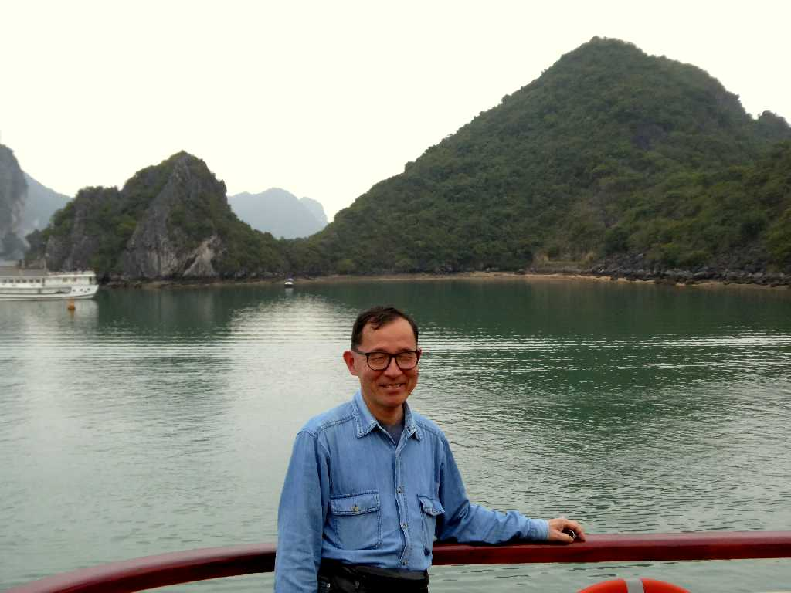

Vịnh Hạ Long 下龍湾
北の桂林から続く広大な石灰岩台地の一角で３０００余りの奇岩や島々からなる湾

Vịnh Hạ Long 下龍湾
桂林は風雨による侵食で形作られた景観であるがハロン湾は海風による侵食で一味違う景観が楽しめる

December 29 2006 Vịnh Hạ Long 下龍湾

Golden Cruise Vịnh Hạ Long
１２年ぶりの再訪問で今回はゴールデンクルーズ号で１泊２日のハロン湾内クルーズ
Vịnh Hạ Long

Vịnh Hạ Long

Vịnh Hạ Long

Hang Luồn Vịnh Hạ Long

Hồ Luồn Vịnh Hạ Long

March 25 2018 Golden Cruise Vịnh Hạ Long


 AI解説
AI解説